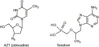

Volume 26, Issue 1, January 2005, Pages 4–7

HIV reverse transcriptase structures: designing new inhibitors and understanding mechanisms of drug resistance

- Division of Structural Biology, The Wellcome Trust Centre for Human Genetics, University of Oxford, Oxford OX3 7BN, UK
- Available online 2 December 2004
HIV reverse transcriptase (RT) is one of the main targets for the action of anti-AIDS drugs. The selection of drug-resistant HIV is a key problem in the continued treatment of the infection and thus new drugs are required. A significant body of information consisting of HIV-1 RT crystal structures with bound inhibitors has become available during the past several years, and, increasingly, such data will be of use in developing novel inhibitors. Two examples of crystal structures of HIV-1 RT with bound inhibitors have been published recently, one with the non-nucleoside CP94707 and the second with the nucleotide analogue drug tenofovir. Such structures will help the design of new drugs and improve our understanding of the mechanisms of resistance.
The worldwide threat to human health posed by the HIV/AIDS epidemic is increasing and now represents the third largest cause of death as a result of infectious diseases. Considerable progress has been made in treating HIV-infected patients in Western countries using highly active anti-retroviral therapy (HAART) involving multi-drug combinations. However, the spread of many drug-resistant forms of HIV means there is a danger that progress already made will be reversed. The rapid emergence of HIV drug resistance is due to factors such as the high turnover of virus, which, together with an error-prone reverse transcriptase (RT), gives rise to a wide range of mutant viruses that can be selected when drug pressure is applied. Additionally, because HIV integrates into the host genome it cannot be eliminated easily and thus drug treatment is essentially life long, giving rise to potential compliance problems. To combat drug resistance, many options in combination therapy are required, and hence a large number of anti-HIV drugs have been developed. Efforts continue to develop new drugs that are directed at either cellular targets such as the HIV receptor and co-receptors (e.g. the cell-surface glycoprotein CD4 and the chemokine receptors CCR5 and CXCR4) or a range of virus-specific targets, including the virus envelope glycoproteins gp41 and gp120, and the virus-encoded integrase enzyme. However, two HIV-encoded enzymes, RT and protease, are the sites of action for nearly all currently approved therapies. To date, there are approximately eight anti-protease and >10 anti-RT drugs in clinical use for treating HIV infection, and just one inhibitor (enfuvirtide) of the fusion of the virus to the CD4-containing cell approved for clinical use.
HIV reverse transcriptase as a drug target
RT is a multi-functional heterodimeric enzyme that converts the genomic HIV RNA into proviral DNA by catalysing RNA-dependent and DNA-dependent DNA polymerase reactions in addition to RNaseH activities. Drugs targeted at HIV RT can be divided into two categories: (i) nucleoside and nucleotide analogue RT inhibitors (NRTIs/NtRTIs) (Figure 1), which, following activation to their triphosphate forms, compete with the RT substrate and also act as terminators of DNA synthesis after incorporation into the primer strand; and (ii) non-nucleoside RT inhibitors (NNRTIs), including the approved drugs nevirapine, delavirdine and efavirenz (Figure 2), which, although having wide structural variation, all bind at a similar site distal to the active site within RT [1]. NNRTIs act as non-competitive inhibitors that are generally specific for HIV-1 RT. One of the drawbacks of the NNRTI class for the treatment of HIV has been the rapid selection of resistant HIV, particularly for first-generation inhibitors such as nevirapine, typified by mutations at Tyr181 and Tyr188 within the binding site of the virus [2]. Resistance to NRTIs such as zidovudine is also common [3]; some mutations within HIV are distal to its binding site and act through indirect mechanisms to promote ATP- or pyrophosphate-induced excision of the blocked primer 4 and 5.
- 

Figure 1. Structures of nucleoside and nucleotide analogue inhibitors of HIV reverse transcriptase (RT): zidovudine and tenofovir. Following phosphorylation to their triphosphate forms, nucleoside and nucleotide analogue inhibitors compete with the RT substrate and are incorporated into the primer strand causing termination of DNA synthesis.

Figure 2. Structures of non-nucleoside inhibitors of HIV-1 reverse transcriptase (NNRTIs). The approved drugs nevirapine, delavirdine and efavirenz in addition to the experimental compound CP94707 are shown. NNRTIs inhibit RT by binding at a site distal to the nucleotide (dNTP) and causing distortion of the catalytic residues. Nevirapine and delavirdine are first-generation NNRTIs, which, compared with the second-generation inhibitor efavirenz, are more susceptible to reduced potency as a result of mutations in the drug-binding site.
Structure-based design of anti-HIV drugs
Knowledge of the three-dimensional structure of HIV protease has been central to the development of many of the drugs that target this enzyme. For HIV RT, structure-based design is not as straightforward because NRTIs need a series of cellular kinases for activation, requiring them to recognize the active sites of four enzymes. Screening nucleosides against HIV in tissue culture has proved the most useful approach to identify NRTIs. The situation for NNRTIs is simpler because no activation steps are required. However, difficulties in obtaining well ordered crystals of RT and predicting inhibitor-binding modes because of the flexibility of RT itself have been limiting factors. As the database of structural information on RT increases, structure-based approaches are being used increasingly in the design of NNRTIs. In the case of the newer generation NNRTIs TMC125 (a diarylpyrimidine) (see Chemical names) and GW678248 (a benzophenone), structural studies have been used as part of the design strategy 6 and 7. In the case of NRTIs, structural studies have been of particular use in understanding mechanisms of drug resistance [8].
GW678248: N-[4-(aminosulfonyl)-2-methylphenyl]-2-{4-chloro-2-[3-cyano-5-(chloro)benzoyl]phenoxy}acetamide
TMC125: 4-({6-amino-5-bromo-2-[(4-cyanophenyl)amino]pyrimidin-4-yl}oxy)-3,5-dimethylbenzonitrile
Recently, further structural studies of HIV RT with bound inhibitors shed light on: (i) how an NNRTI, CP94707 (Figure 2), binds in a novel mode, such that there might be reduced cross-resistance resulting from commonly observed mutations in RT [9]; and (ii) the binding mode of the NRTI drug tenofovir (Figure 1) both before and after incorporation into the primer strand [10].
Novel mode for the binding of the non-nucleoside CP94707 to HIV-1 RT
The NNRTI ‘pocket’ does not exist in HIV-1 RT in the absence of the inhibitor but rather is formed by conformational changes in the RT protein on binding of the NNRTI ligand 11 and 12. The most dramatic structural change is the swivelling of the Tyr181 and Tyr188 side-chains in RT from a ‘down’ to an ‘up’ position (Figure 3a). Some instances of Tyr181 being in a down position for a bound NNRTI are known [13] but unusually in the CP94707–HIV-1 RT complex both tyrosine residues remain in the down position [9] (Figure 3b). This results in CP94707 binding to RT with reduced contacts with Tyr181 and Tyr188. Interactions with Tyr181 and Tyr188 are particularly important for first-generation compounds such as nevirapine [14] and mutations at other sites can operate indirectly by attenuating interactions with the two tyrosine residues [15]. Reduced inhibitor contacts with Tyr181 and Tyr188 are thus likely to provide an improved resistance profile. CP94707 makes aromatic ring stacking interactions with Trp229, which is one of the few residues in the NNRTI pocket that, on mutation, gives rise to a significant loss of enzyme activity [16].
Figure 3. Non-nucleoside inhibitors of HIV-1 reverse transcriptase (NNRTIs) bound in HIV-1 reverse transcriptase (RT). The RT protein backbone is shown in blue whereas the side-chains of the pocket are shown in dark red. The positions of the catalytic aspartate residues are indicated by red spheres. (a) Nevirapine (dark grey) bound in HIV-1 RT. The orange side-chains drawn with thinner bonds indicate the positions of Tyr181 and Tyr188 in the unliganded RT structure. Thus, on binding to nevirapine, these tyrosine residues swivel from a ‘down’ position to an ‘up’ position. (b) CP94707 (dark grey) bound in HIV-1 RT. The principal side-chains involved in NNRTI binding are labelled. Tyr181 and Tyr188 remain in the ‘down’ position. Nevirapine forms strong aromatic ring stacking interactions with Tyr181 and Tyr188 whereas such contacts are greatly reduced in the complex with CP94707.
Using modelling studies, it has been shown that the mutations Tyr181Ile and Tyr188Leu can be accommodated in the binding pocket without disruption of the interactions with CP94707 [9]. Such a binding mode explains the activity of CP94707 against the Tyr181Ile–Tyr188Leu RT double mutant. Ile181 and Leu188 are found in wild-type RT from another virus serotype, HIV-2, which is generally highly resistant to most NNRTIs. It would therefore be interesting to test CP94707 for activity against HIV-2.
The structure of CP94707 bound to RT also explains why this NNRTI is active against the Lys103Asn mutation, which is the most commonly observed resistance mutation in the clinical use of NNRTIs [2]. Asn103 forms a hydrogen bond to Tyr188 in the unliganded RT structure [17], thus stabilizing this conformation because this interaction has to be broken for an NNRTI to bind in the normally observed mode. CP94707 can bind without breaking the Tyr188–Asn103 hydrogen bond in the Lys103Asn mutant RT, which explains the lack of cross-resistance in this case. However, it also raises the question of how conventionally-binding NNRTIs from newer chemical series can overcome resistance as a result of the Lys103Asn mutation.
A further issue raised by this work relates to the possible mechanism of inhibition of RT by CP94707. In addition to disturbing residue Trp229 and the associated region forming the ‘primer grip’, binding of CP94707 results in rearrangement of the distally positioned Tyr115 side-chain 15Å away to a conformation that is incompatible with binding of nucleotides (dNTPs). Tyr115 can act as a gatekeeper residue that discriminates between deoxynucleotides and ribonucleotides. A mechanism of action for conventional NNRTIs involving distortion of the key catalytic aspartate residues was identified previously [12]. However, the latest data indicate that a range of mechanisms for NNRTI-mediated inhibition of RT is possible.
CP94707 is a relatively weak binding inhibitor of HIV-1 RT with an IC50 of 4 μM and, although not of sufficient potency to be a drug candidate, it should act as a useful lead compound for further optimization. The availability of a crystal structure of the complex of CP94707 with HIV-1 RT will provide a stimulus for structure-based design of more-potent NNRTI analogues that can maintain the distinctive binding mode.
Binding of tenofovir-DP to HIV RT-template–primer complexes
Tenofovir is a nucleotide analogue that contains an aliphatic side-chain and a phosphonate group (Figure 1). Only two kinase activation steps are needed to provide the active tenofovir-diphosphate (tenofovir-DP) form. Tenofovir is one of the newer anti-HIV drugs that have been approved and appears to develop resistance less readily than other NRTI drugs. Two crystal structures have been determined for tenofovir in complexes with RT and a DNA template-primer [10]. The DNA was covalently linked to RT to maintain the correct register of nucleic acid and protein, thereby enabling a nucleotide triphosphate to bind in the active site [8]. First, tenofovir-DP was bound to RT (in the nucleotide or ‘N’-site) following chain termination by 2′,3′-dideoxyguanosine (ddG) to prevent incorporation of the drug into the primer strand (Figure 4). Second, tenofovir was incorporated into the primer strand following translocation to the priming or ‘P’-site. In the latter complex, there is an alternative conformation for the adenine base of tenofovir flipped through 180° from the first position (Figure 4). The flexibility of tenofovir as a result of its aliphatic side-chain could explain the presence of this alternative conformation. The flexibility of tenofovir might also prevent ‘retrotranslocation’ to the N-site, which is necessary for ATP-mediated excision and unblocking of the primer, an important mechanism of resistance in the case of zidovudine, where the azido group prevents movement from the N-site [18]. Tenofovir itself can be considered a ‘stripped-down’ nucleotide because the space it occupies does not protrude outside of the equivalent substrate envelope. Thus, it is suggested that less ‘handles’, compared with other NRTI drugs, are available for mutations that arise in RT to exploit to reduce binding of the inhibitor [10]. Lys65 forms a salt-bridge interaction to the triphosphate of nucleotide substrates and the conservative mutation to arginine gives rise to resistance to tenofovir. However, the structural basis for the generation of such tenofovir resistance is as yet unclear. Further crystal structures of RT mutants in complex with tenofovir should help resolve this issue.
Figure 4. Composite view of tenofovir and tenofovir-diphosphate (tenofovir-DP) binding in complexes of HIV-1 reverse transcriptase (RT) with DNA template-primer. Tenofovir-DP in the nucleotide (N-site) is shown in normal atom colouring. The positions for tenofovir in the priming site (P-site) (Tenofovir I) and at a secondary site (Tenofovir II) after incorporation into the primer are shown in dark and light grey, respectively. The position of a magnesium ion (purple) and the three catalytic aspartate residues (D110, D185 and D186) are marked. The key resistance mutation site for tenofovir at K65 is shown interacting with the phosphate groups of the nucleotide.
Concluding remarks
In spite of RT being the first and most widely exploited target for anti-HIV drugs there is still scope for the development of further novel inhibitors of this enzyme. The availability of structural information revealing distinctive binding modes for inhibitors and mechanisms of resistance will assist in structure-based inhibitor design. Additionally, there are further sites on RT that can be exploited as novel drug targets, including the RNaseH active site and the site that binds the tRNAlys3 required for the initial priming of reverse transcription. Further structural studies of wild-type and drug-resistant mutant RT with novel inhibitors bound at these various sites will be of value for the development of new drugs to treat HIV infection.
References
- 1
High resolution structures of HIV-1 RT from four RT–inhibitor complexes
Nat. Struct. Biol., 2 (1995), pp. 293–302

- 2
- Parikh, U. et al. (2002) Mutations in retroviral genes associated with drug resistance. http://www.hiv.lanl.gov/content/hiv-db/COMPENDIUM/2002/partI/Resistance.pdf
- 3
Multiple mutations in HIV-1 reverse transcriptase confer high-level resistance to zidovudine (AZT)
Science, 246 (1989), pp. 1155–1158
- 4
A mechanism of AZT resistance: an increase in nucleotide-dependent primer unblocking by mutant HIV-1 reverse transcriptase
Mol. Cell, 4 (1999), pp. 35–43
- 5
Molecular mechanisms of HIV-1 resistance to nucleoside reverse transcriptase inhibitors (NRTIs)
Cell. Mol. Life Sci., 57 (2000), pp. 1408–1422
- 6
Roles of conformational and positional adaptability in structure-based design of TMC125-R165335 (etravirine) and related non-nucleoside reverse transcriptase inhibitors that are highly potent and effective against wild-type and drug-resistant HIV-1 variants
J. Med. Chem., 47 (2004), pp. 2550–2560
- 7
Structural studies of benzophenone/HIV-1 RT complexes: insights into the potency of the next generation NNRTIs against WT and mutant HIV-1
Antiviral Therapy, 9 (2004), p. S36
- 8
Structure of a covalently trapped catalytic complex of HIV-1 reverse transcriptase: implications for drug resistance
Science, 282 (1998), pp. 1669–1675
- 9
Structure of HIV-1 reverse transcriptase bound to an inhibitor active against mutant reverse transcriptases resistant to other nonnucleoside inhibitors
Proc. Natl. Acad. Sci. U. S. A., 101 (2004), pp. 10548–10553
- 10
Structures of HIV-1 RT–DNA complexes before and after incorporation of the anti-AIDS drug tenofovir
Nat Struct Mol Biol, 11 (2004), pp. 469–474
- 11
The structure of unliganded reverse transcriptase from the human immunodeficiency virus type 1
Proc. Natl. Acad. Sci. U. S. A., 92 (1995), pp. 1222–1226
- 12
Mechanism of inhibition of HIV-1 reverse transcriptase by non-nucleoside inhibitors
Nat. Struct. Biol., 2 (1995), pp. 303–308
- 13
Complexes of HIV-1 reverse transcriptase with inhibitors of the HEPT series reveal conformational changes relevant to the design of potent non-nucleoside inhibitors
J. Med. Chem., 39 (1996), pp. 1589–1600
- 14
Crystal structure at 3.5Å resolution of HIV-1 reverse transcriptase complexed with an inhibitor
Science, 256 (1992), pp. 1783–1790
- 15
Crystal structures of HIV-1 reverse transcriptase mutated at codons 100, 106 and 108 and mechanisms of resistance to non-nucleoside inhibitors
J. Mol. Biol., 336 (2004), pp. 569–578
- 16
Mutational analysis of trp-229 of human immunodeficiency virus type 1 reverse transcriptase (RT) identifies this amino acid residue as a prime target for the rational design of new non-nucleoside RT inhibitors
Mol. Pharmacol., 57 (2000), pp. 954–960
- 17
The Lys103Asn mutation of HIV-1 RT: a novel mechanism of drug resistance
J. Mol. Biol., 309 (2001), pp. 437–445
- 18
Structures of HIV-1 reverse transcriptase with pre- and post-translocation AZTMP-terminated DNA
EMBO J., 21 (2002), pp. 6614–6624
Copyright © 2004 Elsevier Ltd. All rights reserved.
")
{kind=link}
{kind=link}
{kind=link}